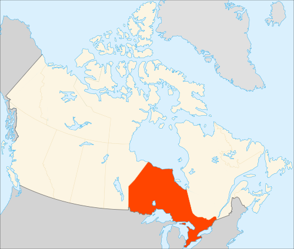

 Онта́рио (англ. Ontario [ɒnˈtɛəri.oʊ]) — провинция, расположенная в центральной части Канады, самая населённая и вторая по площади, после Квебека (Нунавут и Северо-Западные территории крупнее, но они провинциями не являются). Онтарио граничит с провинциями Манитоба на западе, Квебек на востоке, и с американскими штатами Миннесота, Мичиган, Огайо, Пенсильвания (по озеру Эри) и Нью-Йорк на юге. Границы Онтарио с США в большей части естественны, и проходят начиная от Лесного озера, по четырём Великим озёрам: Верхнему, Гурону, Эри и Онтарио, затем вдоль реки Святого Лаврентия, вблизи Корнуолла. Онтарио — единственная провинция, граничащая с Великими озёрами. Её столицей является город Торонто, крупнейший город Канады. Оттава, столица Канады, тоже находится в Онтарио. Согласно переписи 2006 года, в Онтарио 12 160 282 жителей, что составляет 38,5 % населения страны. Площадь — 1 076 395 км². Государственным языком является английский. Органом местной законодательной власти является парламент, избираемый всеобщим прямым голосованием граждан по мажоритарной системе. По результатам выборов 2003 г. и 2007 г. большинство мест в парламенте Онтарио принадлежит партии Либералов, которая сформировала правительство во главе с премьером Дэлтоном Мак-Гинти.
География
Вечерний Ниагарский водопад
Южные точки провинции. Необитаемый остров Миддл в озере Эри (англ. Middle Island) и соседний населенный остров Пили (англ. Pelee) являются одновременно самой южной точкой Канады. Северная граница Онтарио пролегает по водной поверхности в нескольких километрах от берега залива Гудзона и его ответвлением — заливом Джеймса; акватория и все острова заливов относятся к территории Нунавут. Несколькими километрами водной границы в заливе Джеймса Онтарио граничит с Квебеком. С восточной стороны граничит с провинцией Квебек. Граница длиной 430 км проходит меридианом 79 ° 30 ' з. д. в том числе через озеро Абитиби, от озера Тимискаминг и далее на протяжении 620 км идет рекой Оттава почти до места ее впадения в реку Св. Лаврентия. Далее, обойдя окрестности Монреаля, пролегает по реке Святого Лаврентия на протяжении 36 км до государственной границы. Южная граница Онтарио длиной 2 700 км является государственной границей с США и полностью проходит пресными водоемами. На протяжении 309 км Онтарио имеет границу со штатом Нью-Йорк, проходящую через реку реку Святого Лаврентия, озеро Онтарио и реку Ниагара и частично через озеро Эри. По озеру Эри также проходят границы со штатами Пенсильвания, Огайо и Мичиган. Далее граница с Мичиганом проходит через реку Детройт, озеро Сент-Клэр и реку Сент-Клэр, потом по озеру Гурон, по реке Святой Марии и на озере Верхнее граница с Мичиганом, суммарной длиной 1 160 км, завершается. Далее мелкими речками и озерами на протяжении 685 км идет граница с Миннесотой, который заканчивается на Лесном озере. Западная граница протяженностью 1 025 км с провинцией Манитоба идет от государственной границы по меридиану 95 ° 50 ' з.д. до 53 ° с.ш., далее, повернув в направлении С-З-С, идет к заливу Гудзона.
Климат
Климат варьируется от влажного континентального на юге до субарктического на севере. Для юга характерны значительное количество осадков, умеренная зима и теплое лето. Для севера свойственно меньшее количество осадков и низкие температуры, суровая продолжительная зима и короткое теплое лето. Значительные массивы воды на юге и на севере значительно смягчают суточные и годовые перепады температур. Центральная часть провинции имеет меньшую влажность, поэтому для нее характерны значительные колебания температуры в течение года. Онтарио относится к трем природным зонам. Северные прибрежные районы относятся к тундре с ее многолетней мерзлотой. Эти районы покрыты низкорослыми кустарниками, травами, мхами и лишайниками. Остальные районы провинции, кроме Южного Онтарио, покрыты тайгой. Южное Онтарио относится к зоне смешанных лесов. Около 3 / 4 территории провинции покрывают леса. Значительные площади заболочены, покрыты торфяниками и озерами. Низина Св. Лаврентия в значительной мере распахана и урбанизирована. Вокруг городов Ниагара-Фолс и Виндзор (Юго-западное Онтарио) средняя январская температура составляет −4 ° C, июльская — +23 ° C. В городе Капускейсинг (Северо-Восточное Онтарио) рекордные перепады от −47 ° C (рекорд в январе, и в декабре), до +38 ° C (рекорд июня). Самая высокая температура +42.2 ° C зарегистрирована 11 июля 1936 в г. Атикокан (англ. Atikokan, Северо-Западное Онтарио). Самая низкая −58.3 ° C 23 января 1935 в Ирокез Фолс (англ. Iroquois Falls, Северо-Восточное Онтарио).